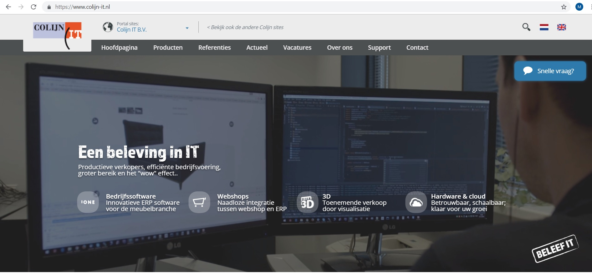
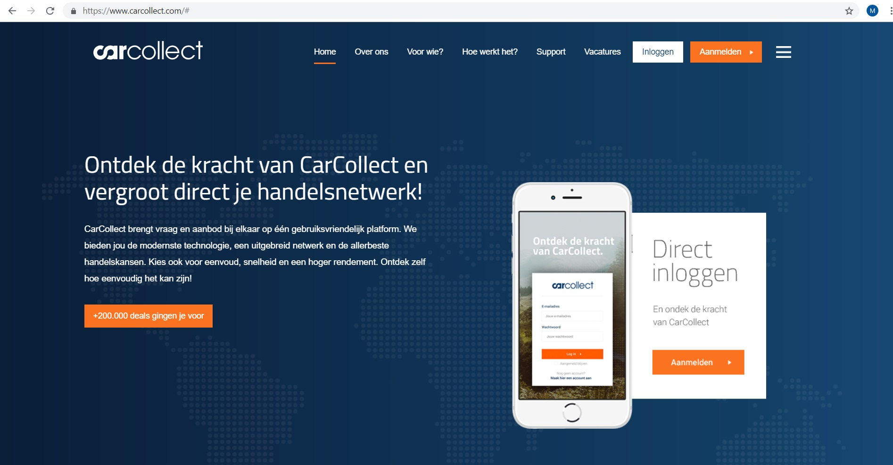

De bedrijven die ik tijdens de bedrijvensafari bezocht heb zijn:
- Your Surprise
- Synthess
- Omoda
- ColijnIT
- CarCollect
Your Surprise:

Enkele functies bij dit bedrijf zijn:
- Data Engineer
- Software Developer
Enkele technieken die ze hier gebruiken zijn:
- PHP
- Docker
Over Your Surprise:
Wat begon met gepersonaliseerde liedjes op een zolderkamer is uitgegroeid tot de grootste online cadeaushop voor gepersonaliseerde cadeaus. Op dit moment is YourSurprise actief in meer dan tien landen.
Syntess:

Enkele functies bij dit bedrijf zijn:
- Web Developer
- Software Ontwikkelaar
Enkele technieken die ze hier gebruiken zijn:
- Javascript
Over Syntess:
Syntess Software is opgericht in 1987. Ze bieden software voor kleine middelgrote en grote bedrijven. Tot hun klantenkring behoren installatiebedrijven, bedrijven uit de bouwsector, onderhoudsbedrijven en bedrijven uit de machinebouw. Er werken voornamelijk veel software developers, maar er werken ook o.a. HR-managers, systeembeheerders en technisch support medewerkers.
Omoda:

Enkele functies bij dit bedrijf zijn:
- Web Developer
- Systeem Beheerder
Enkele technieken die ze hier gebruiken zijn:
- Javascript
- CSS
Over Omoda:
De visie van Omoda is om de beste schoenenretailer te zijn in persoonlijke klantbeleving, service, inspiratie, innovatie en verantwoord ondernemen. Sinds 2014 vind je het hoofdkantoor van Omoda aan de rand van het Zeeuwse stadje Zierikzee. Naast de afdelingen HR, Marketing, Klantenservice en Inkoop zijn hier ook het distributiecentrum en magazijn gevestigd.
ColijnIT:
Enkele functies bij dit bedrijf zijn:
- Javascript/Front-End Developer
- Web Developer
Enkele technieken die ze hier gebruiken zijn:
- Javascript
- Html / CSS
Over ColijnIT:
De Colijn IT groep is gespecialiseerd in het ontwikkelen van meubelsoftware oplossingen. Hun visie is gericht op het crëeren van software voor de woonbranche.
CarCollect:
Enkele functies bij dit bedrijf zijn:
- Junior Developer
- Medior Developer
Enkele technieken die ze hier gebruiken zijn:
- React
- Redux
- Javascript